에너지관리산업기사 (2005-03-06 기출문제)
1과목: 열역학 및 연소관리
1. 황(S) 4kg을 이론공기량으로 완전연소시켰을 때 발생하는 연소가스량(Nm3)은?
- 3.33
- 6.66
- 11.66
- 13.33
(정답률: 65%)

2. C중유 1kg을 연소시켰을 때 생성되는 수증기 양(Nm3/kg)은 얼마인가? (단, C중유의 수소함량은 11%로 하고 기타 수분은 없는 것으로 한다.)
- 0.50
- 0.75
- 1.00
- 1.23
(정답률: 41%)
3. 수소 1kg을 완전연소시키는데 필요한 이론공기량(Nm3/kg)은?
- 6.67
- 16.67
- 26.67
- 36.67
(정답률: 63%)
4. 다음 중 원심력식 집진장치와 관련이 없는 것은?
- 사이클론스크러버
- 백필터
- 사이클론
- 멀티클론
(정답률: 81%)
5. 다음 연료 중 연료비가 가장 큰 것은?
- 토탄
- 갈탄
- 역청탄(유연탄)
- 무연탄
(정답률: 78%)
6. 다음 기체연료의 연소방식 중 예혼합연소방식의 특징 설명으로 잘못된 것은?
- 화염이 짧다.
- 고온의 화염을 얻을 수있다.
- 역화의 위험성이 매우 작다.
- 가스와 공기의 혼합형이다.
(정답률: 77%)
7. 중유의 분무 연소에 있어서 가장 적당한 기름방울의 평균 입경은?
- 1000∼2000μm
- 500∼1000μm
- 50∼100μm
- 10∼50μm
(정답률: 81%)
8. 다음 중 중유의 예열온도가 가장 높은 버너는?
- 회전식
- 고압기류식
- 저압기류식
- 유압식
(정답률: 52%)
9. 석유제품의 황분을 정량하는 시험 방법을 KS 규격에서 분류하고 있다. 다음 중 분류 방법에 포함되지 않는 것은?
- 램프식 부피법
- 봄베식 중량
- 연소관식 공기법
- 타그식 투과법
(정답률: 50%)
10. 다음 점화원에 대한 설명에서 옳은 것은?
- 전기기기의 불꽃은 점화원이 될 수 없다.
- 수증기는 점화원이 될 수 없다.
- 금속의 충격에 의한 불꽃은 점화원이 될 수 없다.
- 정전기에 의한 불꽃은 점화원이 될 수 없다.
(정답률: 77%)
11. 다음 중 로내 상태가 산화성인가, 환원성인가를 확인하는 방법 중 가장 확실한 것은?
- 연소 가스중의 CO2 함량을 분석한다.
- 화염의 색깔을 본다.
- 로내 온도 분포를 체크한다.
- 연소 가스중의 CO 함량을 분석한다.
(정답률: 56%)
12. 중유를 버너로 연소시킬 때 다음 중 연소상태에 가장 적게 영향을 미치는 것은?
- 황분
- 점도
- 인화점
- 유동점
(정답률: 64%)
13. 고체, 액체연료의 발열량 관계식이 맞는 것은? (단, Hℓ : 저위발열량, Hh : 고위발열량, 연료1㎏중의 수소, 수분량을 각각 h, w)
- Hh = Hℓ - 2.5 (9 h - w) [MJ/㎏]
- Hh = Hℓ - 2.5 (9 h + w) [MJ/㎏]
- Hℓ = Hh - 2.5 (9 h - w) [MJ/㎏]
- Hℓ = Hh - 2.5 (9 h + w) [MJ/㎏]
(정답률: 48%)
14. 기체연료의 성분을 가연성분과 불연성분으로 구분할 때 다음 중 불연성분이 아닌 것은?
- 탄산가스
- 일산화탄소
- 질소
- 수분
(정답률: 57%)
15. 액체연료의 선택조건이 아닌 것은?
- 잔류탄소분
- 인화점
- 점결도
- 황분
(정답률: 54%)
16. 액화석유가스(LPG)가 증발할 때에 흡수한 열은?
- 현열
- 잠열
- 융해열
- 화학반응열
(정답률: 83%)
17. 슬래그 연소의 특성이 아닌 것은?
- 과잉공기량이 적어 연소 배출가스에 의한 열손실이 적고, 높은 온도를 유지할수 있어 보일러 열효율이 높다.
- fly ash.가 적어 전열면의 오손이 적고, 재가 용융되므로 미연소물의 배출이 적다.
- 로내 분위기온도를 고온으로 유지해야 하므로 특별한 구조가 필요하다.
- 분쇄기가 필요해서 설비비와 유지비가 비싸다.
(정답률: 55%)
18. 습연소가스 중 각성분의 백분율식이 잘못된 것은?
- O2(%) = {0.21(mA0-A0) / 습연소가스량} × 100
- CO2(%) = (1.867C / 습연소가스량) × 100
- SO2(% )= (0.7S / 습연소가스량) × 100
- N2(%) = (0.79mA0 / 습연소가스량) × 100
(정답률: 53%)
19. 프로판가스(LPG)에 대한 설명이다. 적합하지 않은 것은?
- 독성이 있다.
- 질식의 우려가 있다.
- 가스 비중이 공기보다 크다.
- 누설시 인화 폭발성이 있다.
(정답률: 79%)
20. 다음 중 탄소 1㎏을 연소시키는데 필요한 공기량은 어느것인가?
- 8.89 Nm3, 11.59 ㎏
- 11.59 Nm3, 8.89 ㎏
- 8.89 Nm3, 15.94 ㎏
- 3.33 Nm3, 11.59 ㎏
(정답률: 53%)
2과목: 계측 및 에너지진단
21. 압력 18ata, 250℃의 과열증기를 4ata가 될 때까지 폴리트로프 변화(PV1.3 = C)시키는 경우의 팽창일(kg-m)은? (단, 18ata, 250℃의 과열증기에 대한 비체적 V는 0.1267m3/kg 이다.)
- 17600
- 22300
- 25700
- 28700
(정답률: 31%)
22. 카르노사이클에 있어서 열이 1200K에서 작업 유체로 전달되고 300K에서 방출된다. 1200K의 작업유체로 전달되는 열량은 100kJ/㎏이다. 이 사이클의 효율은?
- 0.75
- 0.25
- 0.52
- 0.97
(정답률: 50%)
23. 그림의 디젤 사이클에서 차단비(cut-off ratio)의 정의는?
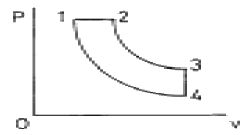
- σ=v3/v2
- σ=v1/v3
- σ=v2/v1
- σ=v3/v1
(정답률: 75%)
24. 25℃에서 포화수증기압은 23.8mmHg이다. 이 온도에서의 절대습도는?
- 0.015
- 0.020
- 0.040
- 0.238
(정답률: 50%)
25. 교축 드로틀링(졸림)과정에서 일정한 값을 유지하는 상태량은?
- 압력
- 엔트로피
- 엔탈피
- 내부에너지
(정답률: 69%)
26. 그림과 같이 유체가 단면적이 변하는 관로를 흐르고 있을 때 B점에서의 유속이 A점에서의 유속의 2배라 할 때 A점과 B점에서의 에너지는 어떠한 관계가 있는가? (단, 관로는 단열재로 싸여 있다.)
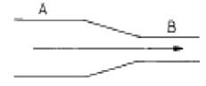
- A점의 에너지가 B점의 에너지보다 크다.
- A점의 에너지가 B점의 에너지보다 작다.
- A점에서의 에너지와 B점에서의 에너지는 서로 같다.
- 유체의 물리적 성질에 따라 클 수도 있고, 작을 수도 있다.
(정답률: 62%)
27. 20℃, 2kg/cm2의 공기를 매분 10m3 흡입하여 8kg/cm2까지 압축하는 극간체적이 없는 경우의 압축기의 소요일은 몇 kg.m/min 인가? (단, 속도에너지는 무시하며 공기는 PV1.3=상수에 따른 상태변화로 간주한다.)
- 267841
- 297872
- 326742
- 348113
(정답률: 45%)
28. 엔탈피는 다음 중 어느 것으로 정의되는가?
- 과정에 따라 변하는 양
- 내부에너지와 유동일의 합
- 정적하에서 가해진 열량
- 등온하에서 가해진 열량
(정답률: 74%)
29. 이상기체가 들어있는 닫힌 계에서 다음 중 엔트로피 변화(ds)의 식이 아닌 것은?
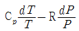
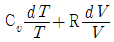
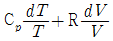
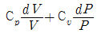
(정답률: 44%)
30. 다음 식은 어느 에너지를 나타내는 식인가?
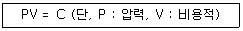
- 유동 에너지
- 위치 에너지
- 내부 에너지
- 일
(정답률: 61%)
31. 건도가 x 인 습증기의 엔탈피(hx)를 나타내는 식은? (단, hf는 포화액, hg는 건포화증기의 엔탈피이다.)
- hf + x hg
- hf + x (hf - hg)
- hg + x (hf - hg)
- hf + x (hg - hf)
(정답률: 51%)
32. 두개의 정압과정과 두개의 단열과정으로 구성된 사이클로서 역사이클이 냉동사이클로도 구성될 수 있는 사이클은?
- 오토사이클
- 브레이튼사이클
- 디젤사이클
- 사바테사이클
(정답률: 57%)
33. 재생 랭킨사이클을 사용하는 주된 목적으로 가장 타당한 것은?
- 펌프 일의 감소
- 공급열량 감소
- 터빈 출구건도 향상
- 보일러 효율 향상
(정답률: 40%)
34. 이상기체의 단열변화에서 닫힌계의 일(절대일)을 나타내는 식이 아닌 것은? (단, K = Cp/Cv)
- Cv(T1-T2)
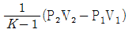
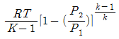
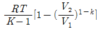
(정답률: 40%)
35. 이상기체가 단열과정으로 압축되었다. 이 때 이 기체의 아래와 같은 변화량 중에서 압축일의 양과 동일한 것은?
- 엔트로피(entropy) 변화량
- 엔탈피(enthalpy) 변화량
- 체적 변화량
- 내부에너지 변화량
(정답률: 33%)
36. 포화액의 포화온도를 그대로 두고 압력을 높이면 어떤 상태가 되는가?
- 압축(과냉)액
- 포화액
- 습포화 증기
- 건포화 증기
(정답률: 53%)
37. 표준압력(1atm)하에서 순수한 물의 빙점은 랭킨(Rankine)온도로 몇 °R이 되는가?
- 0
- 100
- 273.15
- 491.67
(정답률: 52%)
38. 그림은 증기원동소의 재열cycle을 T-S선도 상에 표시한 것이다. 재열과정은?
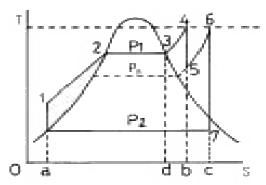
- 3→4
- 5→6
- 2→3
- 7→1
(정답률: 75%)
39. 열역학 제2법칙으로 설명할 수 없는 현상은?
- 열기관의 최대효율 결정
- 냉동기관의 최대효율 결정
- 액체의 기화현상에 대한 설명
- 절대온도에 대한 설명
(정답률: 47%)
40. 다음 중 랭킨(Rankine)사이클의 효율을 높이기 위한 방법은?
- 보일러의 가열 온도를 높인다.
- 응축기의 응축 온도를 높인다.
- 펌프 소요 일을 증대시킨다.
- 터빈의 출력을 줄인다.
(정답률: 68%)
3과목: 열설비구조 및 시공
41. 가스크로마토그래프로 가스를 분석할 때 사용하는 캐리어 가스가 아닌 것은?
- H2
- CO2
- N2
- Ar
(정답률: 49%)
42. 가스분석계의 측정법 중 전기적 성질을 이용한 것은?
- 세라믹법
- 자화율법
- 자동오르자트(Orsat)법
- 가스 크로마토 그래피(Gas chromato graphy)법
(정답률: 53%)
43. 시료가스를 채취할 때의 주의사항으로 틀린 것은?
- 채취구로부터 공기침입이 없어야 한다.
- 시료 가스의 배관은 가급적 짧게 한다.
- 드레인 배출장치 설치 여부와는 무관하다.
- 가스성분과 화학성분을 발생시키는 부품을 사용하지 않아야 한다.
(정답률: 75%)
44. 제어 계기의 공기압 신호의 압력 범위는 어느 정도인가?
- 0∼1.0 kg/cm2
- 0∼10 kg/cm2
- 1∼3 kg/cm2
- 0.2∼1.0 kg/cm2
(정답률: 68%)
45. “CO + H2” 분석계란 어떤 가스를 분석하는 계기인가?
- 과잉공기계
- CO2계
- 미연가스계
- 질소가스계
(정답률: 69%)
46. 차압식유량계의 압력손실의 크기를 표시한 것으로 옳은 것은?
- 오리피스 ＞ 플로우노즐 ＞ 벤츄리관
- 플로우노즐 ＞ 오리피스 ＞ 벤츄리관
- 벤츄리관 ＞ 플로우노즐 ＞ 오리피스
- 오리피스 ＞ 벤츄리관 ＞ 플로우노즐
(정답률: 68%)
47. 물리적 가스분석기의 종류를 열거한 것이다. 아닌 것은?
- 가스밀도를 이용한 것
- 스펙트럼의 간섭을 이용한 것
- 적외선 흡수제를 이용한 것
- 용액 흡수제를 이용한 것
(정답률: 50%)
48. CC열전대의 (-)측 재료로 사용되는 것은?
- 크로멜(crommel)
- 콘스탄탄(constantan)
- 순동(copper)
- 알루멜(alummel)
(정답률: 85%)
49. 압력계 선택시 유의해야 할 사항으로 틀린 것은?
- 진동이나 충격 등을 고려하여 필요한 부속품을 준비하여야 한다.
- 사용목적이나 중요도에 따라 압력계의 크기, 등급, 정도를 결정한다.
- 사용압력에 따라 압력계의 범위를 결정한다.
- 사용용도 등은 고려치 않아도 된다.
(정답률: 81%)
50. 다음 자동제어 방법 중 피드백 제어(Feedback-control)가 아닌 것은?
- 보일러 자동제어
- 증기온도 제어
- 연소 제어
- 급수 제어
(정답률: 49%)
51. 다음 열전대 중 가장 고온을 측정할 수 있는 것은?
- 백금 - 백금로듐(PR)
- 동 - 콘스탄탄(CC)
- 철 - 콘스탄탄(IC)
- 크로멜 - 알루멜(CA)
(정답률: 76%)
52. 차압식 유량계에서 처음보다 압력이 2배로 커지고, 이 때 관경은 오히려 1/3배로 감소되는 경우의 처음 유량 Q1과 나중 유량 Q2와의 관계식은?
- Q2/Q1 = 0.25
- Q2/Q1 = 0.707
- Q2/Q1 = 0.354
- Q2/Q1 = 6.364
(정답률: 26%)
53. 다음 중 P동작(비례동작)의 특징이 아닌 것은?
- 비례대의 폭을 좁히는 등 off-set는 작게 된다.
- 사이클링을 제거할 수 있다.
- 동작신호에 의해 조작량이 정해지므로 off-set 편차가 생긴다.
- 외란이 큰 제어계에는 부적당하다.
(정답률: 50%)
54. 피토관으로 관로의 유속을 측정하였을 때 마노미터의 수주높이는 40㎝였다. 이 때의 유속은 몇 m/sec인가?
- 1.25
- 1.8
- 2.8
- 7.8
(정답률: 49%)
55. 다음 중 맥압이 있는 경우 압력계를 보호하기 위해 사용되지 않는 것은?
- 니들 밸브
- 댐퍼
- 사이폰관
- 세관코일
(정답률: 48%)
56. 보일러에 사용하는 급수조절장치로 수위제어 방식에 적용되는 방식이 아닌 것은?
- 플로트식
- 전극식
- 전압식
- 열팽창식
(정답률: 70%)
57. 차압식 유량계에 대한 설명이다. 틀린 것은?
- 교축장치 통과시 유체의 상변화가 없어야 한다.
- 액체의 측정용으로는 좋으나 기체측정에는 적당하지 않다.
- 점도가 큰 유체의 측정시에는 오차가 발생한다.
- 레이놀즈수 105 이하에서는 유량계수가 변한다.
(정답률: 66%)
58. 다음 중 연속동작이 아닌 것은?
- 비례동작
- 미분동작
- 적분동작
- ON-Off동작
(정답률: 84%)
59. 탄성압력계의 일반 교정에 쓰이는 시험기는?
- 침종식 압력계
- 격막식 압력계
- 정밀 압력계
- 기준분동식 압력계
(정답률: 65%)
60. 다음 중 측온 저항체에 속하지 않는 것은?
- 백금 측온 저항체
- 동 측온 저항체
- 실리콘 측온 저항체
- 비금속 측온 저항체
(정답률: 55%)
4과목: 열설비취급 및 안전관리
61. 밸브봉을 돌려서 열 때 밸브 좌면과 직선적으로 미끄럼 운동을 하는 밸브로서 슬라이딩밸브의 일종이며 고압에 견디고 밸브관이 유체 통로를 전개하므로 흐름의 저항이 거의 없는 밸브는?
- 앵글밸브
- 슬루우스밸브
- 글루우브밸브
- 회전밸브
(정답률: 64%)
62. 보일러 부속장치에 대한 설명이다. 옳지 않는 것은?
- 공기예열기란 연소배가스의 폐열로 공급 공기를 가열시키는 장치이다.
- 절탄기란 연료공급을 적당히 분배하여 완전 연소를 위한 장치이다.
- 과열기란 포화증기를 가열시키는 장치이다.
- 재열기란 원동기(증기터빈)에서 팽창한 증기를 재가열시키는 장치이다.
(정답률: 77%)
63. 관류보일러에 대한 설명으로 틀린 것은?
- 구조상 전열면적당에 비해 보유수량이 현저하게 적어서 기동시간이 짧게 된다.
- 부하변동에 의해서 압력변동을 받지 않으므로 자동제어는 응답이 늦어지는 것으로 좋다.
- 관계(管系)만으로 구성되어 있고, 기수드럼이 없는 보일러이다.
- 고압용으로서는 양호한 편이다.
(정답률: 68%)
64. 어느 가열로에 단열재 두께가 20cm, 단열재 벽 내부온도는 100℃이며 외부는 0℃이다. 또 이 단열재의 열전도도는 0.⑤W/(m.℃)이며, 단열벽의 면적은 10 m2라 할 때 단열벽을 통해 손실되는 열은 몇 W(Watt)인가?
- 150W
- 200W
- 250W
- 300W
(정답률: 57%)
65. A, B, C 3종류 내화물의 열전도율(㎉/m.h.℃)이 각각 8, 1, 0.2 이고, A 10㎝, B 20cm, C 10㎝ 3중 두께로 겹쳐 쓰는 노벽의 노내가 1100℃이고, 노 표면이 60℃이면 접촉저항을 무시했을 때 노벽 m2당 매시 손실되는 열량은?
- 113㎉
- 650㎉
- 1460㎉
- 1816㎉
(정답률: 41%)
66. 실리카의 전이(轉移) 특성을 잘 나타낸 것은?
- 규석은 가장 안정된 광물로서 온도변화에 따라 영향을 받지 않는다.
- 가열온도가 높아질수록 비중이 커진다.
- 내화물에서 중요한 것은 실리카의 고온형 변태이다.
- 실리카의 전이는 오랜 시간을 요해서만 이루어진다.
(정답률: 56%)
67. 내화 골재에 주로 규산나트륨을 섞어 만든 내화물은?
- 용융 내화물
- 내화 모르타르
- 플라스틱 내화물
- 캐스터블 내화물
(정답률: 41%)
68. 상취전로의 장점이 아닌 것은?
- 단순한 설비
- 높은 생상성
- 용이한 슬래그 조성제어
- 산소 JET의 국부적 충돌(교반력 미흡)
(정답률: 74%)
69. 용광로의 능률 향상 대책에 속하지 않는 것은?
- 미분말 철광석의 사용 조업
- 증습 조업
- 산소 부화 조업
- 고압 조업
(정답률: 60%)
70. 동일한 열적 조건하에서 유동형상에 따라 열교환기의 열적 용량의 크기를 비교한 것으로 적당한 것은?
- 대향류 ＞ 직교류 ＞ 평행류
- 평행류 ＞ 직교류 ＞ 대향류
- 평행류 ＞ 대향류 ＞ 직교류
- 대향류 ＞ 평행류 ＞ 직교류
(정답률: 60%)
71. 유체 흐름의 층류, 난류를 판정하는데 사용하는 지수는?
- Nusselt수
- Grashof수
- Reynolds수
- Prandtl수
(정답률: 72%)
72. 다음 중 점도를 나타내는 것이 아닌 것은?
- 동점도
- 절대점도
- 비점도
- 점성점도
(정답률: 62%)
73. 다음 중 안전밸브의 선정이 올바른 것은?
- 온수보일러와 레버식 안전밸브
- 고압 수관보일러와 스프링식 안전밸브
- 기관차형 보일러와 레버식 안전밸브
- 수직(입형)보일러와 중추식 안전밸브
(정답률: 76%)
74. 석회 소성로에서 액체연료 사용의 입식요(立式窯)와 관계없는 것은?
- 직원통로(westofen)
- 이중원통로(Beckenbach)
- 병류축열로(Maerz)
- 로폴 킬른로(Lopol kiln)
(정답률: 52%)
75. 다음 중 시멘트 소성용으로 주로 사용하는 요로는?
- 회전요(rotary kiln)
- 샤틀요(shuttle kiln)
- 도가니로(pot furnace)
- 탱크로(tank furnace)
(정답률: 50%)
76. 다음 중 열유체의 물성을 표시하는 무차원 Prandtl수는? (단, ρ, c, μ, λ는 각각 유체의 밀도, 비열, 점성계수, 열전도율을 표시한다.)
- μ λ / c
- c λ / ρ
- c ρ / λ
- c μ / λ
(정답률: 62%)
77. 스팀트랩 설치시 주의사항이 아닌 것은?
- 설비의 배수 위치보다 낮은 곳에 설치한다.
- 바이패스 라인을 설치한다.
- 가능한 한 곡선부를 많게 한다.
- 트랩 앞에 여과기를 설치한다.
(정답률: 79%)
78. 다음 중 보일러에 사용되고 있는 보일러 물의 pH 조정방식인 알칼리처리 방식에 대한 설명으로 틀린 것은?
- 알칼리처리 방식은 pH 조정제로서 가성소다, 탄산나트륨 등의 알칼리제를 사용하며, 주로 중저압보일러에 적용된다.
- 알칼리처리 방식의 특징은 pH 조정이 용이하며, 경도성분의 대응이 용이하고 정상상태 또는 저온시의 방식력이 크다.
- 이 방식은 pH 조정제의 주입농도에 의한 고농도인산염 처리와 저농도인산염처리로 구분된다.
- 알칼리처리 방식의 보일러수의 pH 기준치는 보일러 압력에도 관계하지만 10.5~11.8의 범위이다.
(정답률: 39%)
79. 플라스틱 내화물의 주원료로 적당한 것은?
- 고령토 샤모트와 알루미나 시멘트
- 고령토 샤모트와 포틀랜드 시멘트
- 고령토 샤모트와 점토
- 고령토 샤모트와 마그네시아 시멘트
(정답률: 53%)
80. 다음 중 안전밸브에 대한 설명으로 틀린 것은?
- 안전밸브는 보일러마다 2개 이상 설치한다.
- 안전밸브의 크기는 전열면적에 반비례한다.
- 안전밸브의 분출용량 합계가 보일러의 최대증발량 이상이어야 한다.
- 규정압력보다 6% 이상일 때 자동적으로 작동해야 한다.
(정답률: 50%)
S + O2 → SO2
몰 비율에 따라서 125mol의 황이 125mol의 O2와 반응하면 125mol의 SO2가 생성된다. 이 때, 이론공기량은 반응에 필요한 산소량을 고려하여 계산된다. SO2의 분자량은 64g/mol이므로, 125mol의 SO2는 8,000g 또는 8kg이 된다. 이 때, 이론공기량은 다음과 같이 계산된다.
125mol SO2 × (32g/mol + 2 × 16g/mol) ÷ 22.4L/mol = 1,786.6L = 1.7866Nm3
따라서, 황 4kg을 이론공기량으로 완전연소시켰을 때 발생하는 연소가스량은 1.7866Nm3이다. 하지만 보기에서는 이론공기량으로 계산한 결과에 7.5를 곱한 값을 보여주고 있다. 이는 연소가스의 부피가 고온고압에서 확장되어 실제 부피가 이론공기량의 7.5배가 되기 때문이다. 따라서, 이론공기량으로 계산한 결과에 7.5를 곱한 값인 13.33이 정답이 된다.